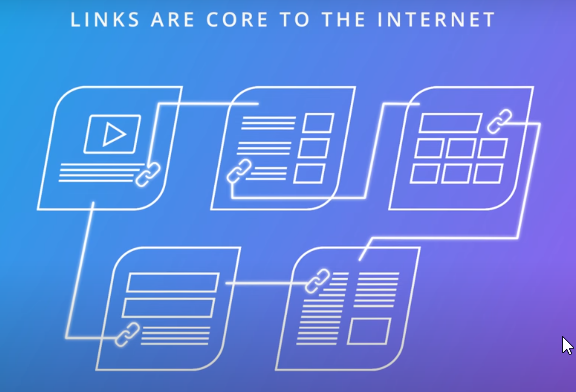
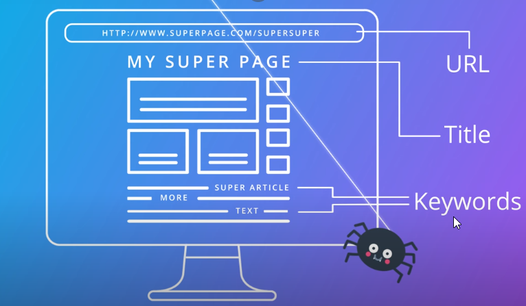
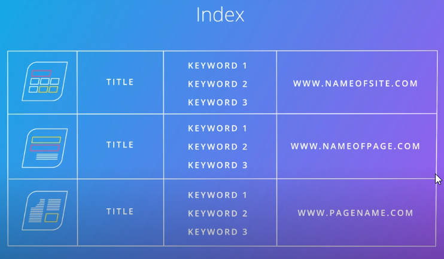
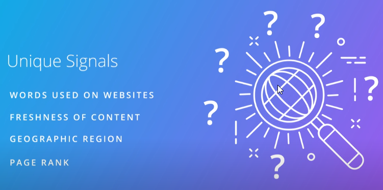

SEO-->is a long term tactic you can use to reach your marketing objective via search channels, one of the most important tools in your toolbox as a marketer will be to use search engine optimization to help your content,product or service get discovered online
why optimizing websites to gain visibility in search engine is important
-->only 5.6% of the clicks make it beyond the first results page. So, most people never make it beyond page 1.
-->in Awareness stage customers are seeking for product not brand
-->for the average search, over 50% of the clicks are on result 1, 2 or 3.
SEO-->The process of making changes to the design, content and link structure to improve a website's ranking, and therefore visibility, in search engine's unpaid results

-->very time a user clicks on one of these ads, the advertiser pays the search engine. They are also referred to as ‘pay per click’ ads.

How Search Works??
-->When you make a google search you aren't actually searching the web, you searching google's index of the web, google do this with software programs called spiders, spiders start by fetching a few web pages and then they follow the links on those pages and fetch the pages they point to and so on until we we indexed a pretty big chunk of the web, many billions of pages stored across thousands of machines
-->when we type words in google search, the software search google index to find every page that includes those search terms, in this case there are hundreds of thousands of possible results, How does google decide which few documents i really want?
By asking questions more than 200 one like:
1-How many times does this page contain your keywords?
2-Do the words appear in the title and URL,directly adjacent?
3-Does the page include synonyms for those words?
4-is this page from a quality website or is it low quality,even spammy?
5-What is this page's page rank?-->that's a formula invented by founders larry page and sergey brin
-->The rates a web pages are important by looking at how many outside links point to it and how important those links are?
-----------------------------------------------------------
How do search engine give access to online content?

-->on web, content is connected by way of hyperlinks or just links for short, these are the links that you can click on, that bring you from one page to the next or help you explore a topic in greater depth

-->if you have a website you have to make sure that all you pages link to other pages in your website
-->when spider lands on a page, it will read the content of the page,spider can read but it can't understand images or look at videos
-->the search robot will cache or save the page as it found, read the title, scan the content, and identify the main words or keywords on the page

-->all this available content and information is kept in a very large database or what google refers to as an index

Posting list-->list of all pages in the google search engine index that include a requested keyword, in the case of a keyword phrase the search engine retrieves the posting list for each keyword in the phrase and then finds the pages that occur in every list

Page Rank-->algorithm involved in determining the ranking or websites in the search results for a given keyword
On-Site SEO-->consists of the changes you could make to the design and content of your site to improve your ranking
off-Site SEO-->includes activities that you can do outside your site that help build your presence and relationships on external sites
----------------------------------------------------------------